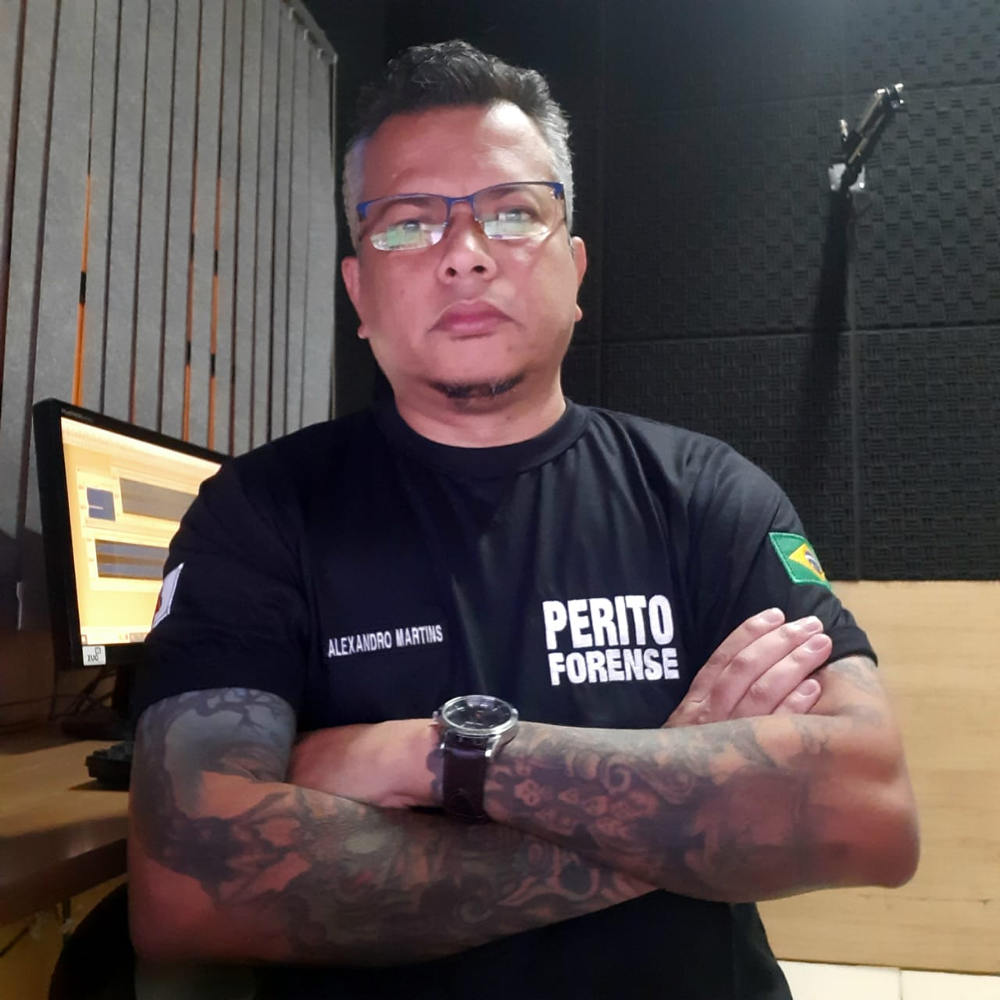

Alexandro F. S. Martins
Desenvolvedor Front End

Desenvolvedor Front End
Olá, meu nome é Alexandro Martins, sou um desenvolvedor Front End apaixonado por criar experiências digitais incríveis. Com uma sólida formação em HTML, CSS e JavaScript, estou sempre em busca de novos desafios e oportunidades para aprimorar minhas habilidades. Minha jornada na programação começou há alguns anos, e desde então tenho trabalhado em diversos projetos que me permitiram explorar minha criatividade e resolver problemas de forma eficaz. Estou sempre atualizado com as últimas tendências e tecnologias do setor, o que me permite entregar soluções modernas e eficientes.
Especialista em criação de sites modernos, responsivos e otimizados para resultados. Transformo ideias em soluções digitais com design atrativo, performance, segurança e foco na experiência do usuário.
Designer criativo e detalhista, com foco em identidade visual, estética funcional e comunicação impactante. Transformo conceitos em visuais únicos que conectam marcas ao seu público.
Designer especializado em WordPress, unindo criatividade e funcionalidade para criar sites visualmente marcantes, responsivos e fáceis de gerenciar. Transformo ideias em experiências digitais intuitivas e profissionais.